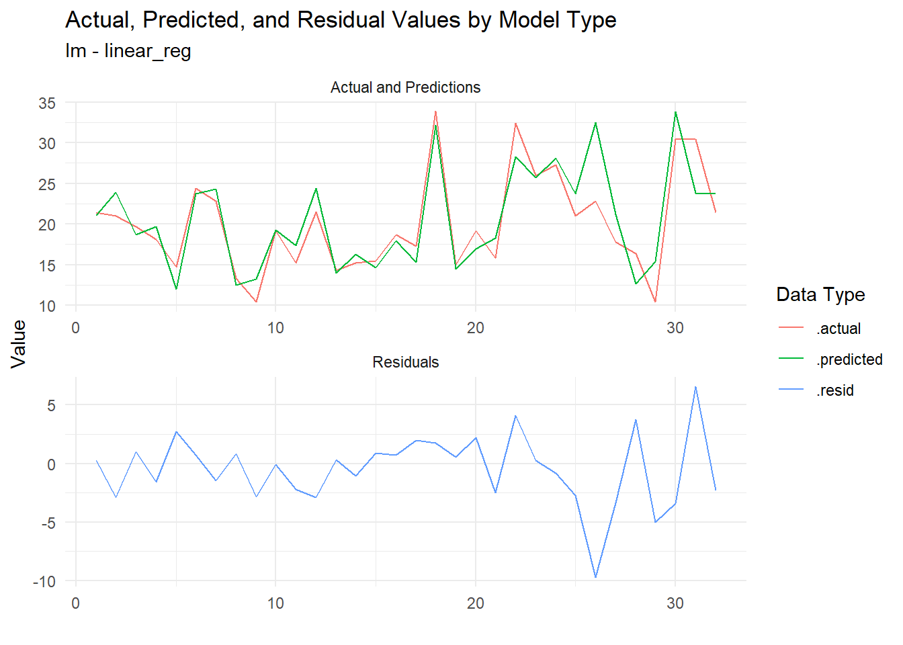
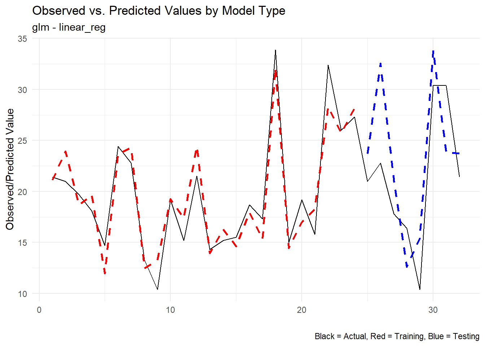
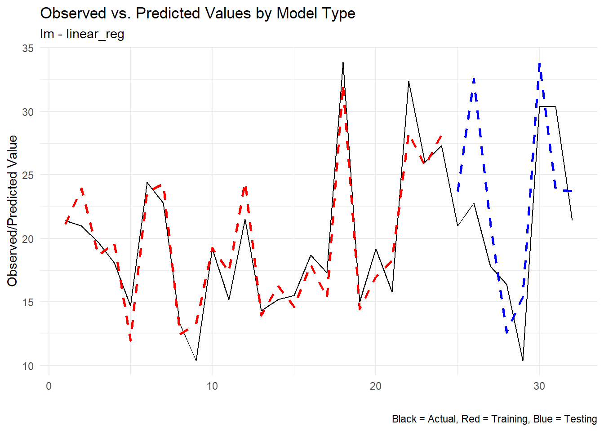

library(tidyAML)
library(dplyr)
library(recipes)
library(purrr)Introduction
If you’ve ever faced the daunting task of setting up multiple regression models in R, you’ll appreciate the convenience and efficiency that tidyAML brings to the table. Today, we’re diving into one of its standout functions: fast_regression(). This function is designed to streamline the regression modeling process, allowing you to quickly create and evaluate a variety of model specifications with minimal code.
Introduction to fast_regression()
The fast_regression() function is part of the tidyAML package, a toolkit that simplifies machine learning workflows in R. This function takes your data and recipe object and generates multiple regression models, using a variety of engines and functions from the parsnip package.
Syntax
Here’s a look at the function’s syntax:
fast_regression(
.data,
.rec_obj,
.parsnip_fns = "all",
.parsnip_eng = "all",
.split_type = "initial_split",
.split_args = NULL,
.drop_na = TRUE
)Arguments
- .data: The data frame to be used in the regression problem.
- .rec_obj: A recipe object from the
recipespackage that defines the pre-processing steps. - .parsnip_fns: Specifies which parsnip functions to use. The default
"all"will create all possible regression model specifications. - .parsnip_eng: Specifies which parsnip engines to use. The default
"all"will create all possible regression model specifications. - .split_type: Defines the type of data split, with
"initial_split"as the default. Other split types supported byrsamplecan also be used. - .split_args: Additional arguments for the split type. When set to
NULL, default parameters for the chosen split type are used. - .drop_na: Determines whether to drop NA values from the data. Default is
TRUE.
Example: Using fast_regression()
Let’s see fast_regression() in action with a simple example. We’ll use the well-known mtcars dataset, and set up a basic recipe to predict miles per gallon (mpg).
First, ensure you have the necessary packages loaded:
Next, we create a recipe object:
rec_obj <- recipe(mpg ~ ., data = mtcars)
rec_obj── Recipe ──────────────────────────────────────────────────────────────────────── Inputs Number of variables by roleoutcome: 1
predictor: 10Now, we can run fast_regression() to create regression models using the lm and glm engines with a linear_reg parsnip function:
fast_reg_tbl <- fast_regression(
.data = mtcars,
.rec_obj = rec_obj,
.parsnip_eng = c("lm", "glm"),
.parsnip_fns = "linear_reg"
)Output
The function returns a tibble with details about the generated models:
fast_reg_tbl# A tibble: 2 × 8
.model_id .parsnip_engine .parsnip_mode .parsnip_fns model_spec wflw
<int> <chr> <chr> <chr> <list> <list>
1 1 lm regression linear_reg <spec[+]> <workflow>
2 2 glm regression linear_reg <spec[+]> <workflow>
# ℹ 2 more variables: fitted_wflw <list>, pred_wflw <list>Explanation
- .model_id: A unique identifier for each model.
- .parsnip_engine: The engine used by
parsnip(e.g.,lm,glm). - .parsnip_mode: The mode of the model, typically
regression. - .parsnip_fns: The
parsnipfunction used (e.g.,linear_reg). - model_spec: The model specification.
- wflw: The workflow object.
- fitted_wflw: The fitted workflow object.
- pred_wflw: The predictions from the fitted workflow.
Benefits of fast_regression()
- Efficiency: Quickly set up and evaluate multiple regression models with different specifications.
- Flexibility: Supports a wide range of engines and functions, allowing for comprehensive model exploration.
- Integration: Seamlessly integrates with the
recipes,parsnip, andrsamplepackages, making it a versatile tool in your modeling arsenal.
Let’s Inspect
Now that we have our models, let’s take a closer look at the results. We can use the extract_regression_residuals() function to extract the residuals from the fitted models along with the original and predicted data:
extract_regression_residuals(fast_reg_tbl)[[1]]
# A tibble: 32 × 4
.model_type .actual .predicted .resid
<chr> <dbl> <dbl> <dbl>
1 lm - linear_reg 21.4 21.1 0.276
2 lm - linear_reg 21 23.9 -2.91
3 lm - linear_reg 19.7 18.7 1.01
4 lm - linear_reg 18.1 19.7 -1.55
5 lm - linear_reg 14.7 12.0 2.73
6 lm - linear_reg 24.4 23.7 0.694
7 lm - linear_reg 22.8 24.3 -1.48
8 lm - linear_reg 13.3 12.5 0.820
9 lm - linear_reg 10.4 13.2 -2.85
10 lm - linear_reg 19.2 19.3 -0.0583
# ℹ 22 more rows
[[2]]
# A tibble: 32 × 4
.model_type .actual .predicted .resid
<chr> <dbl> <dbl> <dbl>
1 glm - linear_reg 21.4 21.1 0.276
2 glm - linear_reg 21 23.9 -2.91
3 glm - linear_reg 19.7 18.7 1.01
4 glm - linear_reg 18.1 19.7 -1.55
5 glm - linear_reg 14.7 12.0 2.73
6 glm - linear_reg 24.4 23.7 0.694
7 glm - linear_reg 22.8 24.3 -1.48
8 glm - linear_reg 13.3 12.5 0.820
9 glm - linear_reg 10.4 13.2 -2.85
10 glm - linear_reg 19.2 19.3 -0.0583
# ℹ 22 more rowsNow of course we must now visualize! Let’s plot the residuals to see how well our models are performing:
extract_regression_residuals(fast_reg_tbl) |>
plot_regression_residuals()[[1]]
[[2]]Now the residuals are plotted, we can see how well our models are performing. This is a great way to visually inspect the quality of our models and identify any potential issues.
Let’s look at the predicted vs actual only now:
extract_wflw_pred(fast_reg_tbl,1:nrow(fast_reg_tbl)) |>
plot_regression_predictions()[[1]]
[[2]]
Conclusion
The fast_regression() function in tidyAML is a powerful addition to any data scientist’s toolkit, providing a streamlined approach to regression modeling. Whether you’re a seasoned pro or just getting started with machine learning in R, this function can save you time and effort, allowing you to focus on what really matters – interpreting and acting on your results.
Give fast_regression() a try in your next project and experience the ease and efficiency it brings to regression modeling! If you have any questions or want to share your experience, feel free to leave a comment below.